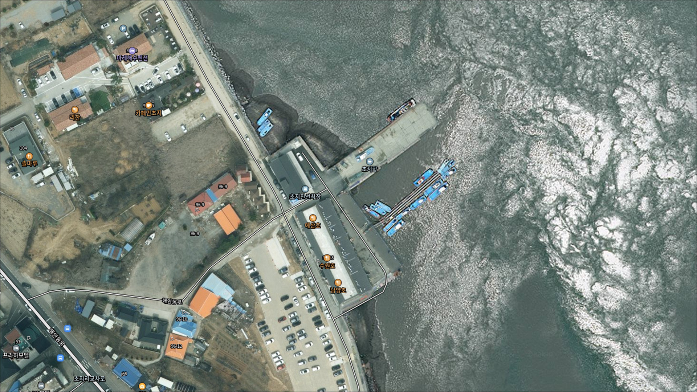
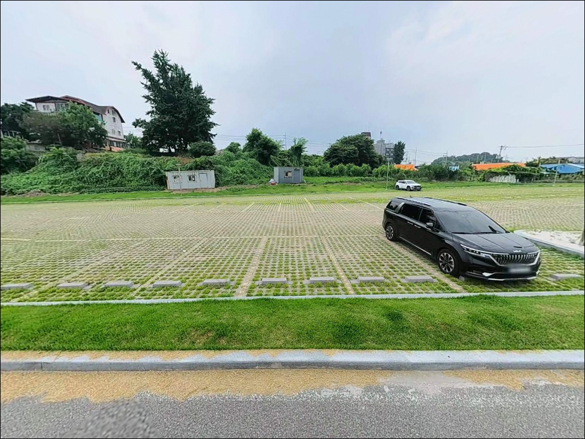
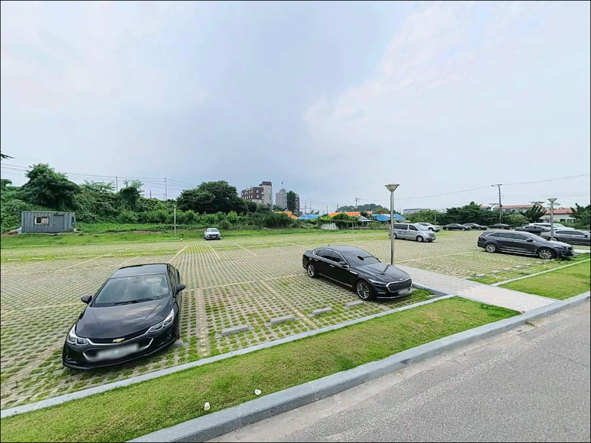
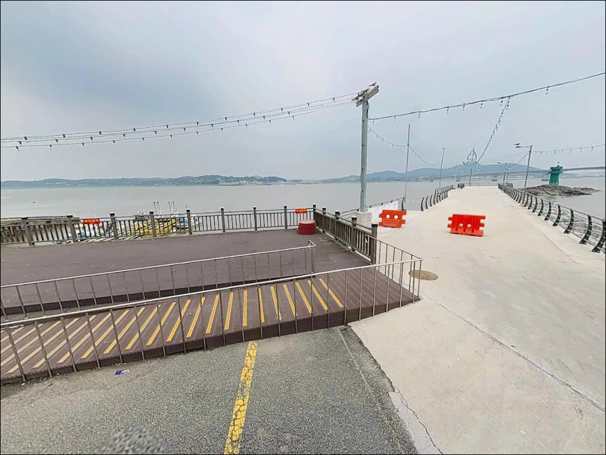
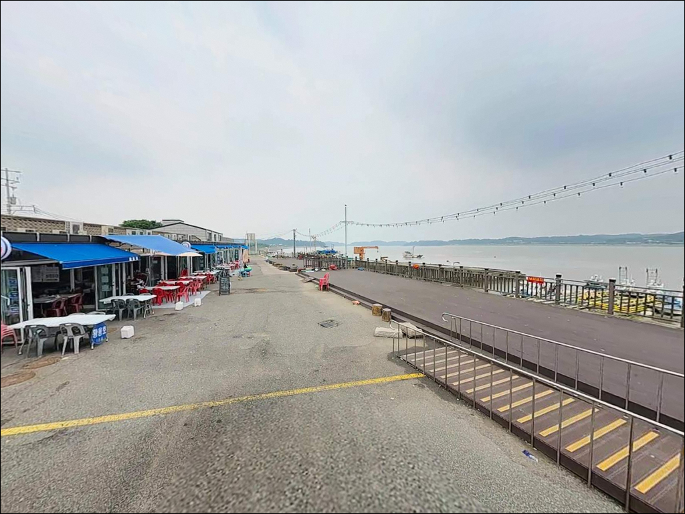
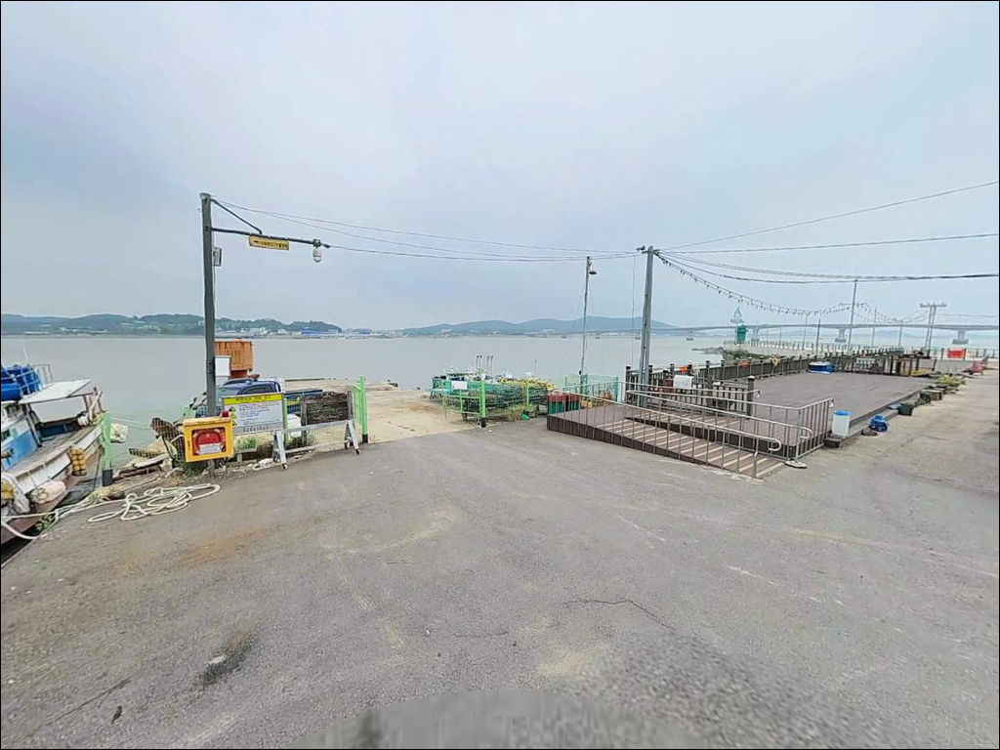
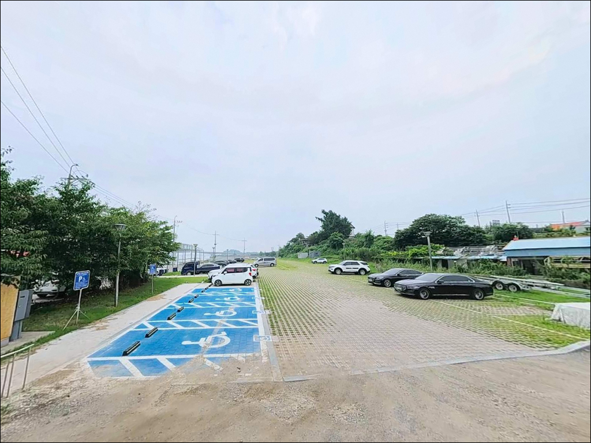
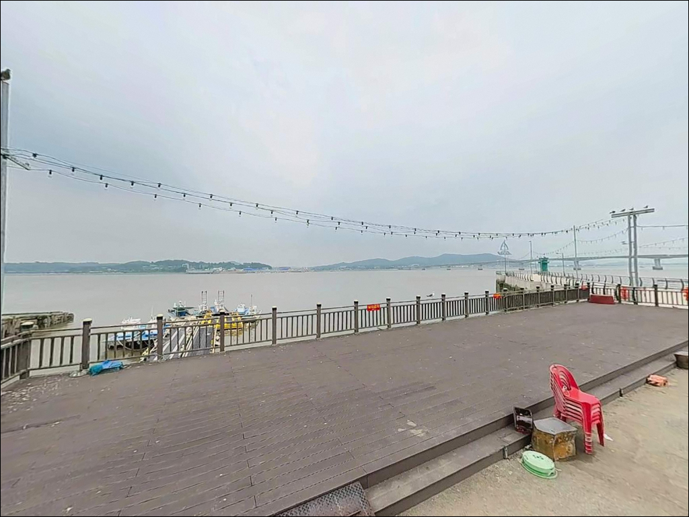
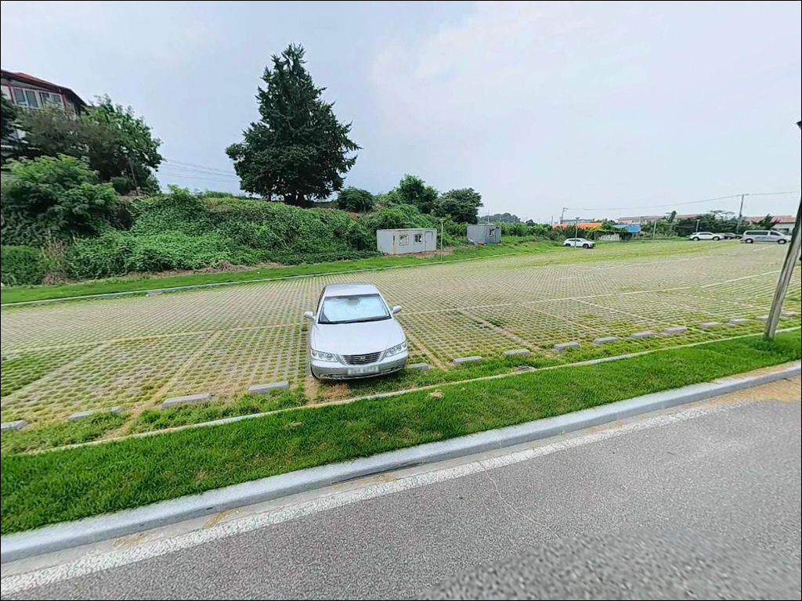

초지진선착장, 초지항, 강화도 인천 강화군 한적한 분위기 속 차박, 낚시를 함께 하기 좋은 곳


포인트 안내
초지진선착장
인천광역시 강화군 길상면 초지리 616-78
강화해협은 월곶과 황산도 사이 조석 낙차로
물살이 빠르기로 알려진 수로입니다.
사리 전후 이 구간에 진입하면
어떤 채비를 써도 조류를 버티기 어렵고,
물때 계산 없이 출발한 낚시꾼이
채비만 날리고 돌아오는 포인트입니다.
초지진선착장은 강화초지대교 바로 서쪽,
강화도 남단 해안에 자리한
어촌정주어항입니다.
염하 수로 방향으로 선착장 끝단이 열려 있어
조류 영향을 직접 받는 구조이며,
농어·망둥어·우럭을 기대할 수 있는
서해 수로형 연안 낚시 포인트입니다.
이 글은 초지진선착장의
진입 환경, 차박 여건, 지형 낚시 여건,
낚시 스타일별 공략 조건에 집중합니다.
조황 단정이나 특정 어종 보장은
이 글의 범위에 포함되지 않습니다.

1. 포인트 위치 및 진입 동선 분석
강화초지대교를 건너 강화도 방향으로 진출한 뒤
우회전하면 바로 진입이 가능한 구조입니다.
진입 도로 자체는 포장도로이며
SUV나 미니밴 수준의 차량이라면
진입 난이도가 높지 않은 편입니다.
선착장 주변은 수산물 타운(횟집 단지)이
인접한 상업 개발된 항구입니다.
방문기 자료에서 "주차 공간이 넓다"는
언급이 복수로 확인되며,
선착장 앞 개방형 공터를 주차 공간으로
활용하는 방식이 일반적인 것으로 보입니다.
다만 영업 시간대에는 수산물 타운 방문 차량과
동선이 겹칠 수 있어 자리 선점 타이밍이
중요합니다.
초지진 사적지 주차장이 인근에 위치하며,
무료 이용이 가능한 것으로 확인됩니다.
선착장 접안면 바로 옆 공간은
어선 이동 동선을 고려해
자리를 잡아야 하며,
회차 공간은 어느 정도 확보된 구조로
대형 차량의 접근 자체에는 큰 어려움이 없을 것으로 보입니다.

2. 차박 환경 평가 및 야간 체류 여건
초지진선착장은 조용한 노지 차박을 기대하고 가기에는
환경이 맞지 않는 포인트입니다.
횟집·수산물 타운이 인접해 있고
초지진 관광지 방문 차량이 드나드는 구조라
야간에도 외부 조명과 차량 통행이 있을 가능성이 있습니다.
오히려 이 포인트는 낚시 전진기지형 차박에
어울리는 성격입니다.
낚시 마친 뒤 차 안에서 잠깐 쉬거나,
이른 새벽 출조를 위해 전날 밤 미리 자리 잡는 용도로
활용하는 방식이 현실적입니다.
프라이버시와 정적을 원하는 차박이라면
강화도 서남쪽 소규모 갯벌 해안선 방향을
위성지도로 사전 탐색하는 편이 낫습니다.


3. 주변 편의시설 및 인프라 현황
수산물 타운 내 횟집이 여럿 영업하고 있으며,
낚시 후 현지에서 식사를 해결하기에는
접근성이 좋은 편입니다.
'일심호' 등 현지 횟집이 블로그 방문기에서
복수 확인되는 수준이나,
영업 시간과 운영 여부는 방문 전 직접 확인하는 편이 안전합니다.
편의점·주유소는 초지대교 진입 동선상
길상면 소재지 방면에 있을 가능성이 있습니다.
구체적인 위치와 운영 여부는 사전에 검색으로
확인해두는 것이 좋습니다.
응급 상황 대비를 위한 기본 식수·비상약품은
출발 전에 갖추는 것이 기본입니다.

4. 진입 전 반드시 챙겨야 할 준비사항
초지진선착장 방문 전 가장 먼저 확인할 것은
인천 물때표입니다.
강화해협은 조류가 빠른 수역으로 알려져 있으며,
사리 전후 조류가 극도로 세지는 특성이 있습니다.
바다타임에서 인천 기준 물때를 확인하고
들물 초반 또는 조금 전후 타이밍을 잡는 것이
이 포인트 공략의 기본입니다.
강화해협 수로 특성상 원투낚시 시
30호 이상 무거운 봉돌이 필요할 가능성이 있습니다.
채비가 조류에 밀려 컨트롤이 안 되는 상황을
미리 예상하고 여분 채비를 충분히 준비하는 편이 좋습니다.
야간 낚시라면 헤드랜턴과 구명조끼는 필수이며,
선착장 전면은 조류가 빠른 수역이므로
발 디딤에 특히 주의해야 합니다.
초지진 사적지 인근 포인트인 만큼
쓰레기 되가져가기는 기본 매너입니다.
어선 이동 동선과 어구에 접촉하지 않는 자리를
먼저 확인하고 자리를 잡는 것이 순서입니다.

5. 조류 수로를 끼고 있는 이 포인트의 낚시 여건
초지진선착장의 핵심 특성은
강화해협(염하) 수로를 직접 마주하는 위치에 있다는 점입니다.
선착장 끝단은 수심이 상대적으로 유지되는 구조이며,
수로 방향으로 조류 흐름이 집중되는 지형 조건을 갖추고 있습니다.
조류가 꺾이는 구간과 초지대교 교각 근방은
어군이 모이는 구조로 형성되는 편입니다.
선착장 측면은 조류 영향을 측면으로 받아
루어 운용에 유리한 각도가 나오는 구조입니다.
내측은 정박 어선 영향으로 낚시 공간이 제한될 수 있어,
선착장 끝단과 외측 측면이
주요 캐스팅 위치가 될 가능성이 높습니다.
서해 특성상 간조 때 접안부가 노출될 수 있으므로
조위 변화를 사전에 파악해두는 것이 중요합니다.
이 포인트는 조류 의존도가 높은 구조입니다.
물때가 맞는 날에는 망둥어·우럭·농어를
기대해볼 수 있는 지형 조건이지만,
사리 전후에는 채비가 조류를 버티기 어려운
수준으로 세집니다.
최신 조황은 방문 전에 꼭 검색해보시기 바랍니다.


6. 강화해협 수로에서 시도해볼 수 있는 낚시 스타일
이 포인트에서 가장 잘 맞는 스타일은
원투낚시입니다.
강화도 초지 일대는 망둥어 원투낚시 포인트로
낚시인들 사이에서 거론되는 지역이며,
청갯지렁이 미끼로 들물 타이밍에 집중하는 방식이
서해 수로형 원투의 기본 패턴입니다.
조류가 강한 날은 봉돌을 30호 이상으로 올려
채비가 흘러가지 않도록 잡아두는 것이 중요합니다.
농어 루어낚시도 시도해볼 만한 스타일입니다.
강화해협 조류 수로 환경은 농어 루어 포인트로서
가능성이 있는 구조이며,
조류가 꺾이는 초지대교 교각 근방이
농어가 자리 잡기 좋은 지형 조건을 갖추고 있습니다.
밀물 초반 조류가 살아나는 타이밍에
미노우나 지그헤드 채비로 수로 방향을 노리는
방식이 이 포인트 구조에 맞습니다.
선착장 주변 석축이나 구조물 근방에서는
우럭·놀래미 원투도 가능성이 있습니다.
구조물 주변은 어류의 은신처가 형성되기 좋은 조건이므로
원투 채비를 짧게 넣어 바닥을 천천히 탐색하는
방식이 유효합니다.
찌낚시는 조류가 잔잔해지는 정조 타이밍에
구조물 주변을 공략하는 방식으로 시도해볼 수 있습니다.

7. 대안 포인트와 플랜 B 동선
초지진선착장에서 조류가 너무 강하거나
수산물 타운 방문객으로 공간이 붐비는 경우,
창후리선착장(강화군 하점면)이 첫 번째 대안입니다.
낚시춘추에 "수심이 깊어 썰물 때도 낚시 가능"한
포인트로 소개된 곳으로,
물때 제약이 상대적으로 적은 편입니다.
강화도 남서쪽 동막해변 인근은
망둥어 원투낚시 포인트로 인근 낚시인들 사이에서
거론되는 지역입니다.
초지진선착장과 어종 성격이 비슷하면서도
해변 구조라 조류 압박이 상대적으로 덜한 편이어서,
원투 위주의 낚시를 계속 이어가고 싶다면
동막해변 방면으로의 이동도 선택지가 됩니다.
장화리 해안은 강화 남단 갯벌 해안선 포인트로,
분위기 조용한 차박을 원하는 낚시인이라면
위성지도로 사전 확인해볼 만한 지역입니다.
초지진선착장의 상업적 환경이 맞지 않을 때
대체 체류 포인트로 검토할 수 있습니다.

물때를 이해한 낚시꾼에게
초지진선착장이 달라 보입니다
망둥어 원투낚시나 농어 루어를 즐기는 낚시인이라면
초지진선착장의 수로 조류 환경은
충분히 어울리는 조건입니다.
진입이 편하고 주차 공간이 넓어
처음 강화도를 탐색하는 낚시꾼이
기점 포인트로 삼기에도 나쁘지 않습니다.
반면 물때 확인 없이 사리 전후에 찾아가거나,
조용한 노지 차박을 기대한다면
기대와 다른 환경을 마주할 가능성이 있습니다.
인천 물때 확인, 여분 채비 준비, 사전 주차 확인—
이 세 가지를 갖추고 간다면
강화해협 수로의 힘을 제대로 느낄 수 있는
포인트입니다.
낚시 후 횟집 타운에서 마무리하고
조용한 자리에서 하룻밤 머물고 싶은 낚시인이라면,
인근 장화리 해안선을 미리 탐색해두는 것도
이 출조를 더 풍성하게 만드는 방법입니다.